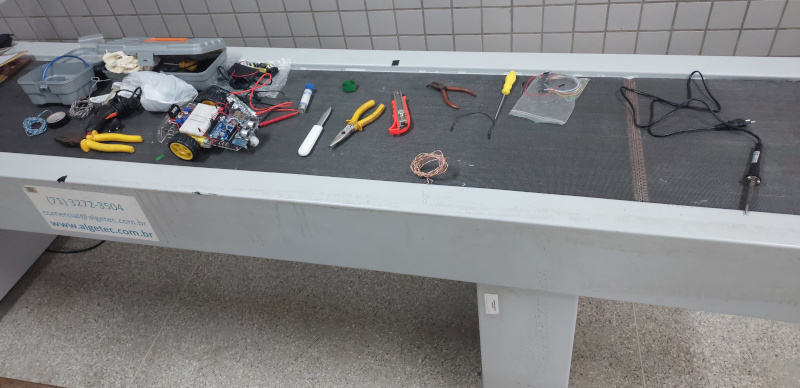

Texto sobre o carro Texto sobre o carro Texto sobre o carro Texto sobre o carro Texto sobre o carro Texto sobre o carro Texto sobre o carro Texto sobre o carro Texto sobre o carro Texto sobre o carro Texto sobre o carro Texto sobre o carro
Texto sobre a motivação do projeto Texto sobre a motivação do projeto Texto sobre a motivação do projeto Texto sobre a motivação do projeto Texto sobre a motivação do projeto Texto sobre a motivação do projeto Texto sobre a motivação do projeto
O primeiro passo na construção desse projeto foi adquirir todos os materiais necessários e iniciar a montagem do veículo propriamente dito.

Para fixar as partes no chassi foram usados encaixes pre-fabricados, parafusos com porcas e fitas adesivas, já para a fixação de algumas das ligações entre fios foi utilizado a solda estanho.
Com tudo montado, partimos para a programação da placa arduíno.

O cérebro do IntellCar é uma plaquinha de Arduíno UNO, é nela que todo o código que controla o robô funciona.

Feito com chassi acrílico, motores CC, pilhas AA, sensor ultrasônico, sensores de infravermelho IR...
É capaz de contornar obstáculos em seu caminho, preferindo a direção com maior espaço disponível.

Consegue seguir um percurso previamente trilhado e obedecer instruções presentes na trilha.